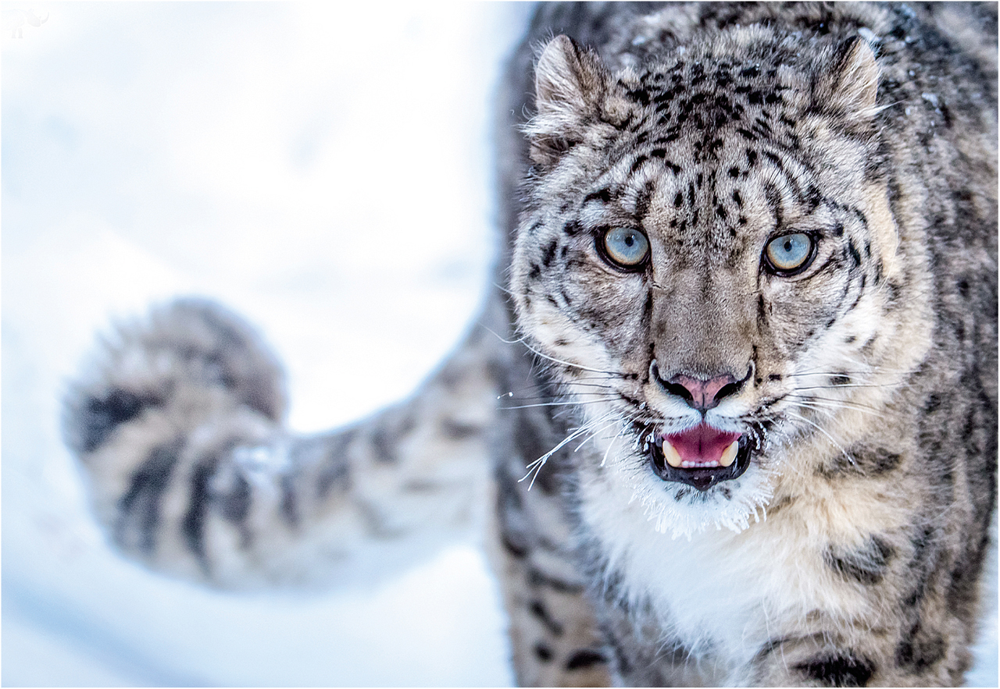

Snow Leopards are some of the world's most elusive hunters. Mostly found at higher elevations, they are uniquely adapted to their cold, mountainous terrain.
Snow Leopards are more than just adapted for the cold; they're perfect for hunting the unsually skittish prey they stalk up high. In addition to their natural camouflage, snow leopards have an incredible horizontal leap; they're capable of reaching targets over 20 feet away in a single bound. If one of these alpine creatures gets the jump on you, it's pretty much over.